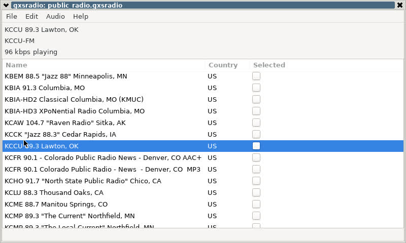

Rolling your own minimal embedded Linux for the Raspberry Pi -- part five: X
 This series of articles is about
building up a custom, minimal Linux installation for the Raspberry
Pi (or similar), for use in an appliance or similar embedded application.
I started in the first article by
describing how to set up the most minimal of Linux installations, that
would boot to a root shell in a kernel console. In subsequent articles
I described how to obtain and set up basic utilities,
configure service management (using
This series of articles is about
building up a custom, minimal Linux installation for the Raspberry
Pi (or similar), for use in an appliance or similar embedded application.
I started in the first article by
describing how to set up the most minimal of Linux installations, that
would boot to a root shell in a kernel console. In subsequent articles
I described how to obtain and set up basic utilities,
configure service management (using init
-- no systemd in an application like this), how to
set up wireless networking, and how to get audio working. All the
while, I've been presuming a hand-crafted set-up, with every userland
process
that runs being completely under the developers's control. I've assumed
that in an application like this, we would wish to avoid server/desktop
heavy-hitters likesystemd, udev, DBus, etc.
A fundamental premise all along has been that the installation would be
mostly read-only -- at least the root filesystem would be read-only,
and requiring no special shut-down procedure.
I've also presumed, and will continue to presume, that we're willing to use existing, compiled binaries from the Raspbian repository, rather than building everything from source. In a related article I described one technique for extracting binaries and their dependencies onto a build host, rather than an existing Raspbian system. That article discussed the advantages and disadvantages of working that way, rather that compiling everything from source. Fundamentally, you're trading convenience for installed size, because the packages in the repository have a high level of "dependency sprawl". But that's not a point of concern in one-off or small-run embedded projects, and time-to-completion might be.
In this last article in the series, I will describe how to run X-based graphical applications in an embedded system, without needing a full desktop or any of the infrastructure that goes with it.
Embedded X?
It's worth asking whether X is appropriate in an embedded system at all. After all, it isn't a natural fit -- X is more common on desktops. I should point out, however, that I'm not talking about running, say, a web browser or word processor on a Linux appliance. There are many lightweight, desktop-focused Pi Linux distributions that are designed for that kind of application -- DietPi is an example. Rather, I'm considering the practicality or running one or two, probably customer-written, X applications. 
For example, my gxsradio application (see screenshot) was designed for use on an Internet radio device with a minimal installation of X and GTK. I wrote it such as to avoid the problems that arise from the lack of most desktop-related infrastructure. It isn't always possible to get existing X applications to run in a minimal system.
If you want to run an application with a graphical user interface
in an embedded system, the real question to ask is: what
alternative is there to X? gxsradio does have a console-based
alternative that works reasonably well -- provided you have a keyboard,
or some hardware method of making key selections. Touch-screen
support in the kernel console is still very difficult. Moreover, the
Linux kernel console has no Unicode support, which is increasingly
a problem in this post-ASCII world.
The alternative to X would be to write a graphical application that interacts directly with the framebuffer and input hardware. There's no problem in principle with doing this -- it's just very time-consuming and involved. Even relatively subsidiary problems like rendering Unicode fonts can be very complicated. To some extent there are open-source libraries that can be used for this kind of thing but the reality is, for better or worse, most libraries intended for graphical displays are designed for X (or its equally heavy alternatives, like Wayland).
There was a short-lived project to adapt the GTK libraries to work directly on a framebuffer, without X. So far as I know, this is not being developed further. Even SDL doesn't really work without X any more. For better or worse, for GUI-based applications X may be the only game in town.
People are often reluctant to use X in an embedded project, and understandably so. In fact, though, it's not really the basic X server that is slow and memory-intensive -- it's all the infrastructure that goes with it. In an embedded application you don't need a display manager, or a configuration manager, or perhaps even a window manager -- mostly you just need a drawing surface and/or a basic widget library. I think this is not impractical to implement in an embedded project.
Recap -- how X actually works
Twenty years ago it would not have been necessary to explain to a Linux developer how X works -- everybody knew. Since the rise of the "Linux desktop", however, the internal operation of X -- which is really quite simple -- has become submerged by a heap of largely-incomprehensible supporting software. To run X on a Linux appliance, we really have to get back to basics.
The key component of X is the X server. For many years now
everything that runs X has used the Xorg X server,
that was originally derived from the XFree86 project back in the 90s.
One of the major improvements to the X server since then has been
in the area of auto-configuration -- back in the day, hand-crafting
an X configuration file for all your hardware was the stuff
of nightmares. Unfortunately, a lot of the auto-configuration
support relies on infrastructure like DBus and udev
that won't exist on a minimal system, so to some extent we're going
to be back in the 90s when it comes to set-up -- more on this
later.
The role of the X server is to carry out primitive drawing operations
on behalf its clients -- the applications. X was always envisaged as
a client-server protocol and, back in the day, the X server would have
run on a desktop workstation, and its clients on some kind of mainframe.
Although such an architecture hardly exists today, X is still a
client-server protocol, with Xorg as the server and
the applications as its clients. The X server will communicate with
the display hardware, either via a framebuffer interface provided
by the kernel, or using some more direct method. It will
also communicate with input devices -- mouse, touch panel, etc.
It's conventional to run the X server as root, because
of this close coupling to hardware, but there's rarely a need to
run X clients as root
The X server understands the concept of a window, that is, of a region of screen that belongs to some particular application. Within that window it can draw lines, shapes, and basic text glyphs; all functionality beyond that is supplied by something else.
Applications rarely, if ever, communicate with the X server using its native protocol: they use libraries of varying degrees of complexity, which usually build on top of one another. These are typically called 'widget libraries', although the modern ones provide services that go far beyond handling screen widgets.
One of the most important X clients in most installations is the window manager. The basic purpose of a window manager is to move and re-order windows on behalf of the user. The window manager will usually 'decorate' windows, that is, draw a box around them with various controls. Many window managers provide application management functions as well -- that is, they provide ways to start and stop applications, typically using icons or menus. Some Linux desktop systems delegate these responsibilities to a separate software component. Some even delegate fundamental window-manager functions like window decoration to separate components.
Although it surprises some developers, many X applications will run
perfectly well without a window manager. Old stalwarts like
xclock and xcalc work just the same with
or
without one -- so long as you don't mind positioning their windows
using the command line. If you're building an appliance with a single
application, whose main window should fill the entire screen, question
whether you need a window manager at all. If you do, you almost
certainly don't need a desktop heavyweight like Gnome Shell.
You probably don't even need a lightweight
desktop window manager like xfwm or IceWM
-- even the lightest of the lightweight desktop window managers is
too sophisticated for an embedded system.
For embedded systems that need a window manager, I normally use
matchbox. For Raspberry Pi, this is available from
the Raspbian repository, although I doubt that anybody running
Raspbian actually uses it. The key feature of matchbox
-- apart from its speed and size --
is that it forces a single, full-screen window. You can switch
between multiple applications if you have them, but each will
occupy the whole screen. This is exactly the behaviour that is required
when using a 5" or 7" touch panel as your display device.
The window manager is usually started very soon after the X server starts, and has a lifetime the same as that of the X server. In an embedded system the window manager may be largely invisible to users.
A key part of an X installation on a desktop system is a
display manager. The display manager is a small X client
application that authenticates users, and creates a new desktop
session when a user logs in. There's almost certainly no need
for such a thing in an embedded system -- you would just
arrange for a startup script to run the required application
with the appropriate user permissions.
In short, to run an X application on an embedded Linux system you need an X server, whatever X-related libraries your application requires, and perhaps a window manager. And that's probably about all.
Obtaining the X server
The standard Xorg server for the Raspberry Pi is
available in the Raspbian repository, in the xorg
package. The full package contains a lot of code that you'll never
need, but the alternative is to build the server from source, which
will give you better control. This isn't a job for the faint-hearted,
however.
The driver for the Linux framebuffer is included in the xorg
package, but
you'll probably need additional kernel modules for input devices.
In particular, the evdev module (in package
xserver-xorg-input-evdev will enable input from
many standard input devices, including almost all USB devices,
and the Raspberry Pi official 7" touchscreen (I'm unsure if
3rd-party touch panels are supported using the same interface).
Configuring the X server
This is where we have to take a step back in time, because in a system without desktop infrastructure the configuration will have to be defined manually. The display configuration is probably straightforward enough, if you have only one display device. On the Raspberry Pi the only supported display interface is the Linux framebuffer, whether you're using a touch panel or an external HDMI monitor, so this configuration will be boilerplate. For input devices, however, you might have to experiment.
If you're using the evdev module, then most (perhaps all)
input devices will be aggregated as device files
under /dev/input. Lacking something like udev
to categorize these devices and give them helpful names, you'll have
to figure out which eventXXX file corresponds to which
device. Although there are utilities for probing the /dev/input
devices, I don't really think there's a better method than
cat /dev/input/eventXXX while wiggling the various
input devices, to see which shows activity.
I've found that the assignment of eventXXX devices to
hardware is stable between reboots -- but it will probably change
if hardware devices are added or removed.
The following is a sample configuration for a Pi 3B that has a USB keypad, a USB trackball (mouse), and a touch panel. You probably shouldn't assume that the input device numbers will be transferrable to any other system.
Section "ServerFlags"
Option "AutoAddDevices" "false"
Option "AutoEnableDevices" "false"
Option "AllowEmptyInput" "false"
EndSection
Section "Screen"
Identifier "foo"
EndSection
Section "ServerLayout"
Identifier "bar"
Screen "foo"
InputDevice "mouse"
InputDevice "keyboard"
InputDevice "touchscreen"
EndSection
Section "Device"
Identifier "Raspberry Pi FBDEV"
Driver "fbdev"
Option "fbdev" "/dev/fb0"
Option "SwapbuffersWait" "true"
EndSection
Section "InputDevice"
Identifier "mouse"
Driver "evdev"
Option "Device" "/dev/input/event1"
Option "Emulate3Buttons" "True"
Option "Emulate3Timeout" "50"
Option "GrabDevice" "False"
EndSection
Section "InputDevice"
Identifier "keyboard"
Driver "evdev"
Option "Device" "/dev/input/event4"
Option "GrabDevice" "False"
EndSection
Section "InputDevice"
Identifier "touchscreen"
Driver "evdev"
Option "Device" "/dev/input/event8"
Option "GrabDevice" "False"
EndSection
The options in the ServerFlags section are essentially
to disable auto-configuration, which won't work without
udev and DBus. The serverLayout section
has one entry for each hardware device -- one display and three
input devices. The InputDevice sections simply
associate a name with a file in /dev/input.
This is a fairly simple X configuration, compared with the kind we had to create in the 90s. At least we don't have to configure the display hardware timing parameters for different display modes -- that is all handled in the kernel's framebuffer device.
Starting X
The following script, which is run from an init script,
is sufficient to start the X server, the matchbox window
manager, and my Internet radio application. Starting the X server and window
manager takes about a half-second on a Pi 3B -- starting a
Gnome desktop session takes sixty times that long.
mkdir /var/log modprobe evdev Xorg -config /etc/X11/X.conf su - user -c "DISPLAY=:0 matchbox-window-manager &" su - user -c "DISPLAY=:0 gxsradio &"
The mkdir /var/log command is necessary if
/var is an in-memory filesystem -- which it will
have to be if you're running a read-only root filesystem. It's
good security discipline to run application code as an unprivileged
user so far as possible, hence the su invocations.
Summary
Running X on an embedded Linux system might not be the most obvious way to get a graphical user interface but, in fact, there are few alternatives that don't involve massive amounts of work. With careful configuration, running X need not be slow or unreasonably memory-intensive, even on a single-board computer.
Closing remarks
Building a complete, functional Linux distribution for an embedded or appliance application is not straightforward, as you'll have seen if you've followed the articles in this series. An awful lot of Linux software -- even low-level system software -- assumes a large-scale installation, for a desktop or server. There are many, many embedded Linux appliances in the world, but pre-packaged, supported distributions for such applications are -- well, non-existent.
Happily, building your own is interesting and educational, which is a good thing, considering how much work is involved.
This is the last article in this series, at least for now. If you found any of these articles useful, please get in touch, and I might be inspired to write some more.
Back to the series index.